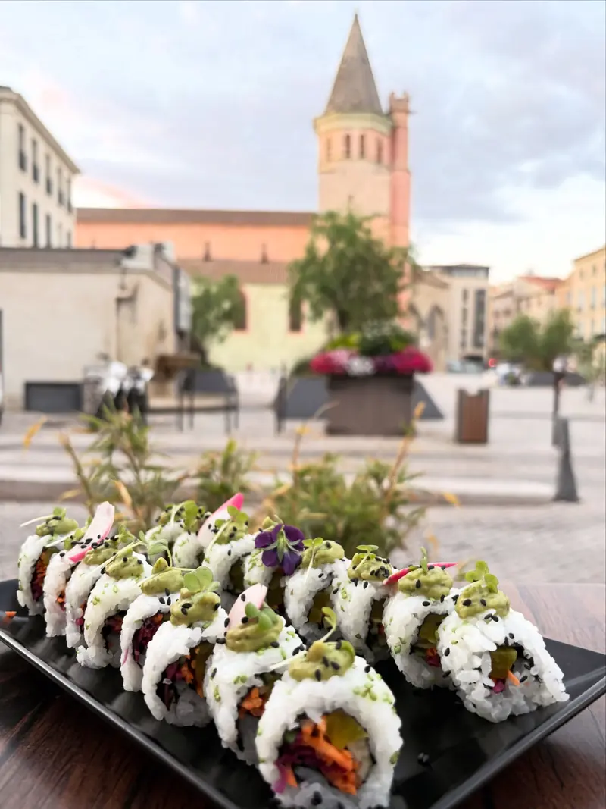

Sur place · Béziers
Le restaurant
Douze couverts, une déco qui garde l’âme du lieu, et une terrasse face à l’église de la Madeleine. Le service à table fait partie de la maison.



Rokib & Laura
Un rêve de longue date, ouvert le 17 mai 2026
Ils y pensaient depuis des années. Freinés par le Covid, Rokib et Laura ont finalement ouvert leur premier restaurant au printemps 2026, sur la place de la Madeleine. Tous deux sortent du lycée hôtelier Jean-Moulin de Béziers.
En cuisine, Rokib part des recettes traditionnelles de la gastronomie nikkei et y met sa touche : pâte à gyoza croustillante cuite en tacos, ceviche à la leche de tigre, sushis relevés de maracuja ou de piment rouge.
En salle, Laura veille au couvert et au service, aussi importants à ses yeux que l’assiette. Un détail : tout est préparé à la minute. Un peu d’attente parfois, mais une fraîcheur que nos clients remarquent.
Réserver
Par téléphone uniquement
La salle est petite et tout est fait à la minute : appelez-nous pour réserver, surtout le vendredi et le samedi soir.
12h – 14h30 · 18h45 – 22h · fermé le mercredi
| Lundi | 12h – 14h30 · 18h45 – 22h |
|---|---|
| Mardi | 12h – 14h30 · 18h45 – 22h |
| Mercredi | Fermé |
| Jeudi | 12h – 14h30 · 18h45 – 22h |
| Vendredi | 12h – 14h30 · 18h45 – 22h |
| Samedi | 12h – 14h30 · 18h45 – 22h |
| Dimanche | 12h – 14h30 · 18h45 – 22h |
1 bis rue Porte Olivier, place de la Madeleine
34500 Béziers

Pas le temps de vous asseoir ?
Commandez en ligne en deux minutes : livré à Béziers ou prêt à emporter, à l’heure que vous choisissez.